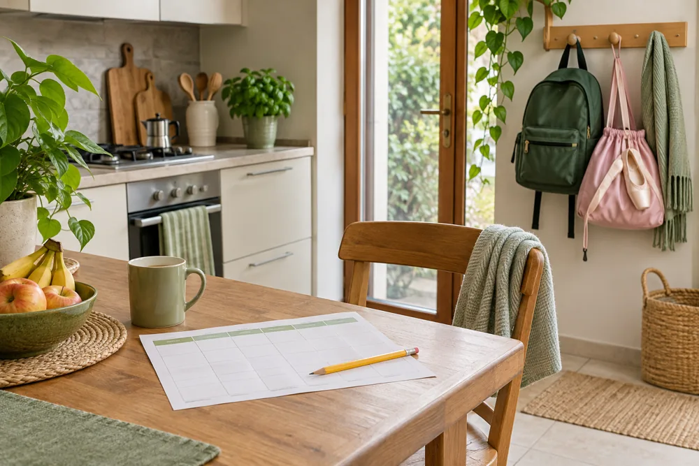

Comment organiser la semaine entre l’école et les activités
Retrouvez les horaires, les personnes qui accompagnent les enfants et les sacs à préparer.

Notez qui fait quoi et à quelle heure
Passez ensemble en revue les activités de la semaine. Pour chacune, notez qui y va, à quelle heure et qui accompagne l’enfant. Ajoutez une note si quelque chose doit être préparé. Vendredi, par exemple, Gianni a judo à 17 h 30 et Maria a danse à 18 h. Vérifiez les deux sacs la veille et décidez qui accompagne chacun.
Essayez avec l’agenda de la maison
Saisissez les deux activités d’exemple avant d’ajouter les vôtres. L’agenda est accessible depuis le menu. L’inventaire, la liste de courses et l’enregistrement automatique dans le navigateur sont aussi gratuits. EatMeFirst s’ouvre sans installation ni inscription.